Психологическое консультирование — это метод оказания помощи, основанный на глубоком понимании человеческой психики. Для эффективной работы консультанту-психологу необходима качественная подготовка, включающая обучение, семинары и тренинги. Мы изучили лучшие курсы, где психологи осваивают основы психотерапии, современные методы консультирования и получают профессиональное образование.
Содержание статьи
🏆 Профессиональная переподготовка по психологии – Московский институт психологии
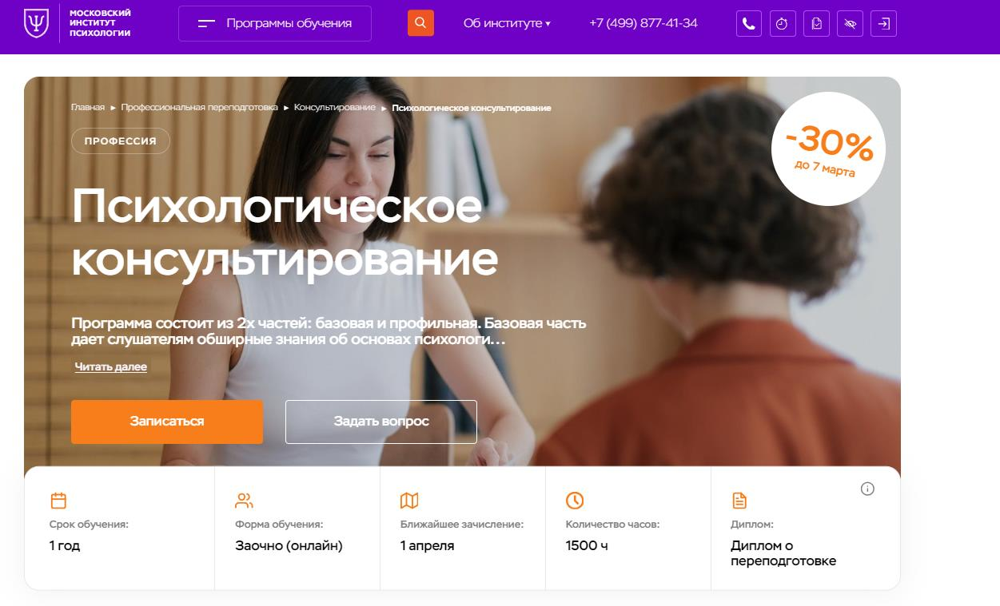⭐ Рейтинг: 5.0
- Сайт: mip.institute/professions/konsultirovanie/psiholog-konsultant
- Полная стоимость: 169 921 рублей. Возможность вернуть 13% налогового вычета.
- Рассрочка: 0% на 12 месяцев, от 14 200 рублей в месяц.
- Длительность: 1 год.
- Документ: Диплом о профессиональной переподготовке с государственным лицензированием.
- Трудоустройство: Поддержка карьеры и развитие частной практики.
Особенности курса:
Курс предоставляет возможность изучения актуальных психологических теорий и практик дистанционно, что позволяет совмещать обучение с работой. Программа включает лекции, интерактивные занятия и поддержку от кураторов. Участники получают доступ к вебинарам и учебным ресурсам, а также демонстрации реальных клиентских случаев.
Преподаватели курса:
-
Бербер Наталья Николаевна — профессиональный психолог, кандидат психологических наук, НЛП-практик.
-
Перемолотова Ирина Александровна — семейный психолог, арт-терапевт, член ассоциации КПП.
-
Круглушина Олеся Александровна — консультирующий психолог, преподаватель психологии.
-
Шавырина Анна Алексеевна — нейропсихолог, кандидат психологических наук, эксперт в области работы мозга.
Кратко о программе курса:
- Психологическое консультирование
- Основы психиатрии и психотерапии
- Возрастная психология
- Психодиагностика и нейропсихология
- Отработка навыков на практике
Чему научитесь:
Обучение позволит проводить анализ состояния клиентов, оказывать поддержку в решении внутриличностных проблем, использовать современные методы консультации.
Преимущества и особенности:
- Лицензированные программы с международным признанием
- Возможность дистанционного обучения
- Практические занятия с реальными кейсами
- Углубленное изучение психологии и смежных дисциплин
- Поддержка от кураторов и постоянная обратная связь
- Сертифицированные преподаватели с большим опытом работы
- Шанс начать или обновить профессиональную карьеру
Читайте отзывы учеников:
Студенты отмечают полезность программы и профессионализм преподавателей. Подчёркивают удобный формат дистанционного обучения, доступ к дополнительным ресурсам и возможность совмещать обучение с работой.
🏆 Психологическое консультирование – Институт Онлайн Профессий
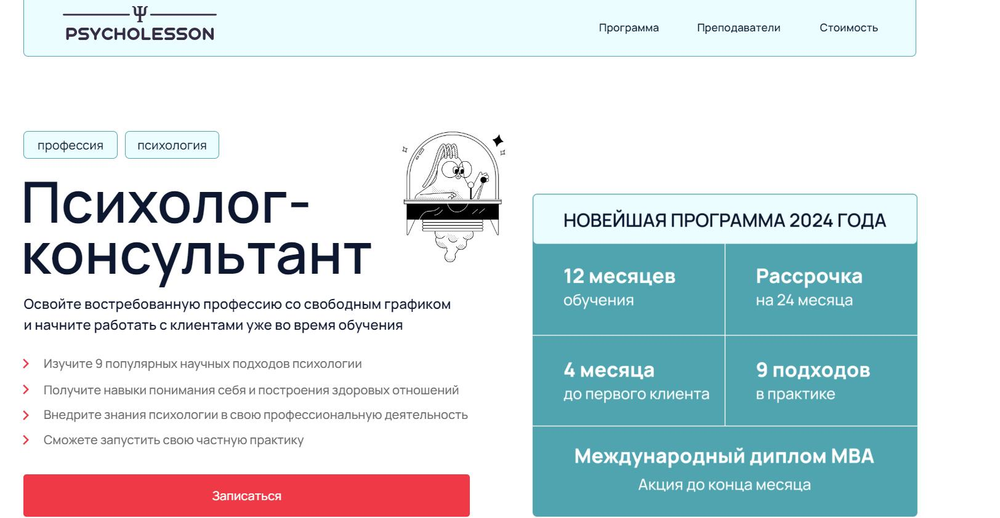⭐ Рейтинг: 5.0
- Сайт: psycholesson.ru/psy-consultantP
- Полная стоимость: от 355 111 рублей до 647 963 рублей. Возможность налогового вычета.
- Рассрочка: от 14 797 рублей в месяц, без процентов до 24 месяцев.
- Длительность: 12 месяцев (13 модулей)
- Документ: Диплом о профессиональной переподготовке государственного образца и диплом MBA.
- Трудоустройство: Помощь в запуске частной практики и построении карьеры в психологии.
Особенности курса:
Курс построен на систематическом изучении 9 популярных научных методов психологии, таких как когнитивно-поведенческая терапия, схема-терапия и арт-терапия. Поддержка студентов осуществляется не только во время учебы, но и после завершения, включая помощь с поиском первых клиентов и оформление профиля. Программа признана ОППЛ и соответствует стандартам 2024 года.
Преподаватели курса:
- Татьяна Колошина — клинический психолог, кандидат психологических наук, доцент.
- Алёна Шуляк — практикующий психолог, специализация: полимодальная психотерапия.
- Дарья Синицина — эксперт в терапии принятия и ответственности.
- Анна Агошкова — психиатр, специалист в когнитивно-поведенческой терапии.
Кратко о программе курса:
- Введение в профессию и этика психотерапевтических отношений
- Когнитивно-поведенческая терапия
- Терапия принятия и ответственности
- Системная семейная психотерапия
- Коучинг и продвижение личного бренда
Чему научитесь:
Программа курса поможет вам освоить базовые навыки психологического консультирования, научиться разбирать и решать психологические проблемы клиентов, развиваться в профессиональной деятельности.
Преимущества и особенности:
- Пожизненный доступ к материалам курса
- Поддержка наставников и практика в группах
- Консультации и обратная связь от топовых психологов
- Членство в Общероссийской Профессиональной Психотерапевтической Лиге (ОППЛ)
- Помощь в поиске первых клиентов
- Гарантия возврата средств в течение 21 дня
Читайте отзывы учеников:
Студенты курса высоко оценивают его содержательность, профессионализм преподавателей и комфортный формат обучения. Многие отмечают поддержку, которую они получают на всех этапах, и возможность запуска успешной карьеры психолога-консультанта.
🏆 Психолог-консультант – Московский институт технологий и управления
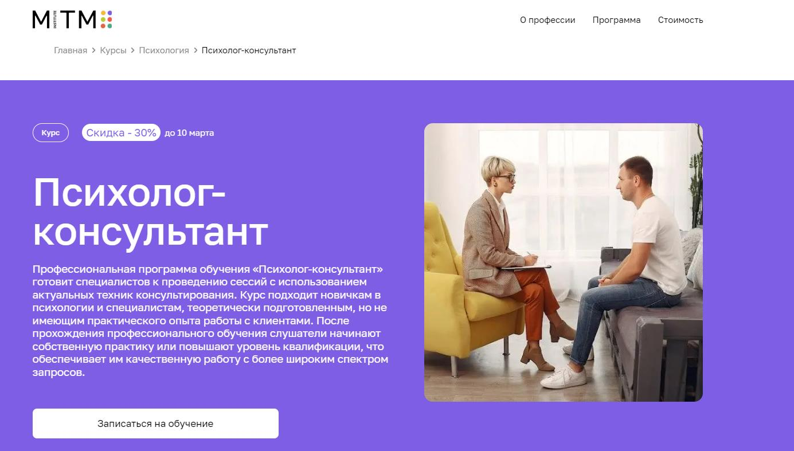
⭐ Рейтинг: 5.0
- Сайт: mitm.institute/psiholog-konsultant--kurs
- Полная стоимость: 13 090 ₽/мес (со скидкой 30% до 28 февраля – 9 170 ₽/мес). Возможность оформить налоговый вычет 13%.
- Рассрочка: 0% на 12 месяцев, ежемесячный платеж 9 170 ₽.
- Длительность: 1 год (1500 часов обучения).
- Документ: Диплом о профессиональной переподготовке государственного образца.
- Трудоустройство: Программа содействия трудоустройству, поддержка в развитии частной практики.
Особенности курса:
Образовательная программа дает фундаментальные знания и практические навыки психологического консультирования. Подходит как для новичков, так и для специалистов, желающих повысить квалификацию. Включает индивидуальные и групповые консультации, анализ клиентских кейсов, супервизии и киноклуб с психологическим разбором фильмов. Обучение проходит дистанционно, что позволяет совмещать учебу с работой.
Преподаватели курса:
- Елена Айрапетян – интегративный психолог, специалист по когнитивно-поведенческой терапии, член АКПП.
- Анна Ермоленко – дипломированный психолог, член АКПП, специалист в области экстремальной психологии.
- Анна Селезнева – семейный психолог, руководитель факультета психологии.
Кратко о программе курса:
- Основные методы психологического консультирования.
- Диагностика и анализ запросов клиентов.
- Работа с внутренними конфликтами.
- Навыки интерпретации психологических проблем.
- Методы кризисного консультирования.
- Практическая подготовка на реальных кейсах.
Чему научитесь:
Развивать практические навыки консультирования, анализировать запросы клиентов, выстраивать доверительные отношения и работать с кризисными состояниями.
Преимущества и особенности:
- Дистанционное обучение без отрыва от работы.
- Сопровождение куратора на протяжении всего курса.
- Практические задания с обратной связью от преподавателей.
- Онлайн-встречи и супервизии.
- Доступ к учебным материалам и записям лекций.
- Поддержка комьюнити и киноклуб с психологическим разбором фильмов.
- Государственный диплом, подтверждающий квалификацию.
Читайте отзывы учеников:
Студенты отмечают удобный формат дистанционного обучения, высокое качество преподавания, поддержку кураторов и возможность применить знания на практике. Многие выпускники успешно начинают частную практику или находят работу в сфере психологического консультирования.
Психолог-консультант – Talentsy
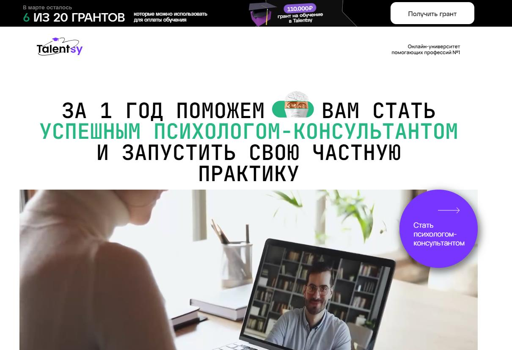
⭐ Рейтинг: 4.9
- Сайт: talentsy.ru/professiya-psikholog
- Полная стоимость: 156 250 ₽ (со скидкой -38% по гранту – 93 750 ₽). Возможность оформить налоговый вычет 13%.
- Рассрочка: от 9 375 ₽ в месяц на 3, 6, 12, 24, 36 месяцев без переплат.
- Длительность: 12 месяцев (1200 академических часов).
- Документ: Диплом о профессиональной переподготовке установленного образца РФ, международный диплом MBA, сертификаты IPHM и CPD.
- Трудоустройство: Поддержка в продвижении услуг, помощь в запуске частной практики, обучение привлечению клиентов.
Особенности курса:
Программа рассчитана как для начинающих, так и для практикующих специалистов. Студенты проходят обучение у 15 топ-преподавателей, среди которых доктора и кандидаты наук, авторы книг и ведущие специалисты отрасли. Курс включает практику в мини-группах, супервизии, тренинги и анализ реальных демосессий. С 6 месяца предусмотрено обучение продвижению услуг и привлечению клиентов.
Преподаватели курса:
- Елена Новоселова – психотерапевт с 30-летним опытом, эксперт программы «Правила жизни» на телеканале «Культура».
- Инна Васильева – доктор психологических наук, профессор, специалист по психологии интуиции.
- Ксения Кунникова – кандидат психологических наук, специалист по раннему развитию детей.
- Ольга Виндекер – практикующий психолог, автор учебных пособий, руководитель Российского психологического общества.
- Юлия Лебедева – специалист по психологии эмпатии, более 20 лет работы в высшей школе.
Кратко о программе курса:
- Основы психологического консультирования.
- Психология личности и диагностика.
- Семейная психология и психология сексуальности.
- Методы кризисного консультирования.
- Современные подходы в психотерапии.
- Личный бренд психолога-консультанта.
- Практика консультирования с реальными клиентами.
Чему научитесь:
Навыки психологического консультирования, работа с клиентскими запросами, кризисное консультирование, диагностика состояний, выстраивание доверительных отношений, продвижение услуг и привлечение клиентов.
Преимущества и особенности:
- Диплом о профессиональной переподготовке с возможностью работы в РФ и за границей.
- Практика консультирования с реальными клиентами.
- Гибкий график и удобный дистанционный формат.
- Поддержка кураторов и наставников в процессе обучения.
- Супервизии и мини-группы для отработки навыков.
- Обучение продвижению услуг и построению частной практики.
- Доступ к учебным материалам даже после окончания курса.
Читайте отзывы учеников:
Студенты отмечают высокий уровень преподавателей, насыщенную программу, удобный формат дистанционного обучения и практическую направленность курса. Многие выделяют возможность начать частную практику уже в процессе обучения и поддержку наставников. В отзывах часто упоминают качественный контент и актуальность знаний.
Психолог-консультант с дополнительной специализацией по семейной психологии – НАДПО
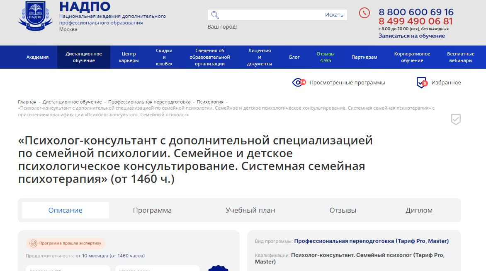⭐ Рейтинг: 4.8
- Сайт: nadpo.ru/do/psikholog-konsultant
- Полная стоимость: 102 600 ₽ (скидка 23% до 25 февраля – 78 900 ₽). Возможность оформить налоговый вычет 13%.
- Рассрочка: от 6 575 ₽ в месяц на 6, 12, 24 или 36 месяцев без переплат.
- Длительность: от 10 месяцев (1460 часов).
- Документ: Диплом о профессиональной переподготовке, вносимый в ФИС ФРДО.
- Трудоустройство: Поддержка карьерного центра, обучение продвижению частной практики.
Особенности курса:
Программа объединяет классическое психологическое консультирование и системную семейную терапию, что делает её универсальной для будущих специалистов. В курсе предусмотрены практикумы, разбор кейсов, групповые супервизии и интерактивные тренинги. Доступ к библиотекам ЛитРес и Библиоклуб, воркшопы в группах и киноклуб с разбором фильмов. Обучение полностью дистанционное, с бессрочным доступом к материалам и возможностью совмещения с работой.
Преподаватели курса:
- Елена Дарменко – стаж с 2002 года, эксперт в области клинической психологии.
- Галина Нарожная – специалист в консультативной психологии, стаж с 2011 года.
- Виталия Плавинская – практикующий психолог, стаж с 2016 года.
- Елена Прохорова – специалист по семейной терапии, опыт работы с 2018 года.
Кратко о программе курса:
- Основы психологического консультирования.
- Возрастная и семейная психология.
- Социальная психология и конфликты в семье.
- Психология кризисных ситуаций и их коррекция.
- Системная семейная терапия.
- Практикумы, воркшопы, групповые супервизии.
Чему научитесь:
Консультирование семей и пар, диагностика психологических проблем, работа с детско-родительскими конфликтами, ведение групповых тренингов, развитие частной практики.
Преимущества и особенности:
- Официальный диплом, внесённый в госреестр.
- Полностью дистанционное обучение, доступ 24/7.
- Интерактивные воркшопы и групповые супервизии.
- Киноклуб и книжный клуб для глубокой проработки материалов.
- Разбор реальных клиентских кейсов с экспертами.
- Обучение построению личного бренда и продвижению услуг.
- Карьерная поддержка и помощь в запуске частной практики.
Читайте отзывы учеников:
Студенты отмечают удобный формат дистанционного обучения, насыщенную программу, высокий уровень преподавателей и доступность практических занятий. Многие говорят, что курс помог не только освоить новую профессию, но и разобраться в личных вопросах, улучшить взаимоотношения с близкими. Отзывы можно найти на официальном сайте и независимых платформах.
Психолог-консультант – Psychodemia
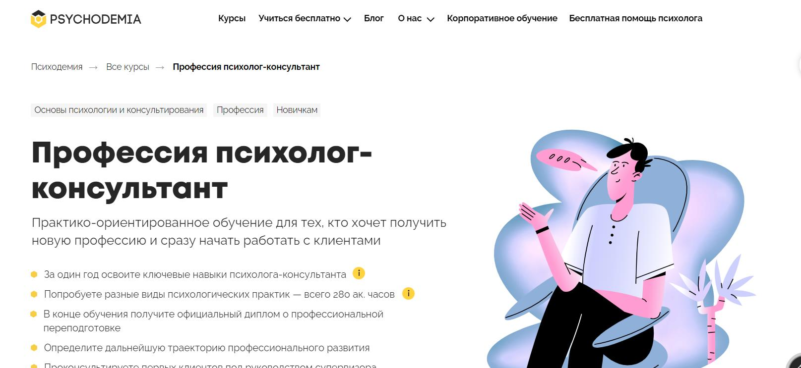⭐ Рейтинг: 4.7
- Сайт: psychodemia.ru/masterpsy
- Полная стоимость: От 304 750 ₽ (возможность налогового вычета 13%)
- Рассрочка: от 4 669 ₽ в месяц на 24 месяца
- Длительность: 12 месяцев
- Документ: Диплом о профессиональной переподготовке (515 или 545 ак. часов)
- Трудоустройство: Практика с реальными клиентами под супервизией
Особенности курса:
Программа ориентирована на получение практических навыков в психологическом консультировании. За год обучения студенты изучают основные методы психотерапии, осваивают работу с клиентами и получают поддержку преподавателей. Практика включает супервизии, работу в тройках, анализ демосессий. Выпускники могут начать частную практику или трудоустроиться в сфере психологии.
Преподаватели курса:
- Мария Данина – кандидат психологических наук, основатель «Психодемии», стаж 17 лет
- Татьяна Альмухаметова – психотерапевт, научный сотрудник лаборатории Психодемии, стаж 10 лет
- Наталья Кисельникова – кандидат психологических наук, доцент, стаж более 20 лет
- Владислав Конкин – клинический психолог, специалист по КПТ и семейной терапии, стаж 12 лет
- Юлия Терехова – гештальт-терапевт, эксперт журнала «Psychologies», стаж 12 лет
Кратко о программе курса:
- Основы психологического консультирования
- Психотерапевтические подходы (КПТ, EMDR, нарративная практика и др.)
- Этика в работе психолога
- Работа с изменениями у клиентов
- Практика с реальными клиентами
- Супервизия и обратная связь
- Продвижение психологических услуг
Чему научитесь:
Студенты осваивают ключевые навыки психолога-консультанта, учатся вести сессии, анализировать клиентские кейсы и строить долгосрочную карьеру в психологии.
Преимущества и особенности:
- Фокус на практическом обучении
- Доступ к супервизиям и разбору реальных случаев
- Обучение у опытных специалистов
- Возможность выбора специализации
- Работа с реальными клиентами
- Гибкий формат обучения
- Поддержка сообщества выпускников
Читайте отзывы учеников:
Студенты отмечают высокий уровень преподавания, большое количество практики и доступность материалов. Многим нравится профессионализм преподавателей и поддержка в обучении. Среди минусов называют интенсивную нагрузку и высокую стоимость, однако большинство считают, что курс полностью оправдывает вложенные средства.
Профессиональная переподготовка по психологическому консультированию – Московский Институт Профессионального Образования (МИПО)
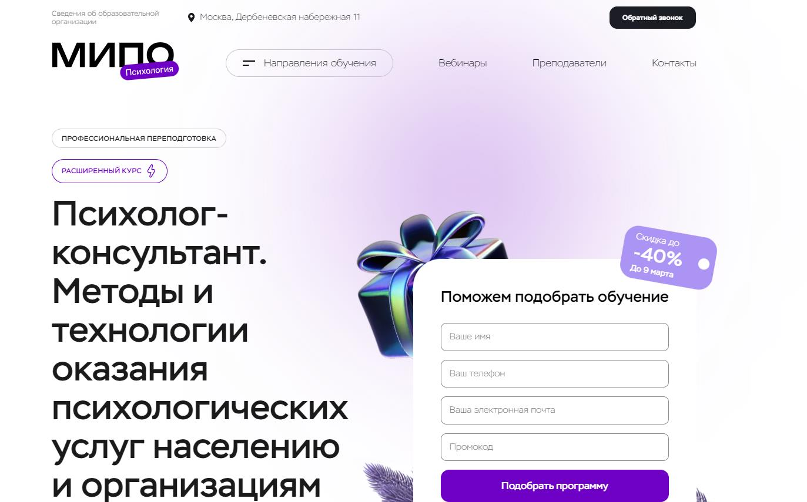⭐ Рейтинг: 4.7
- Сайт: mipo.msk.ru
- Полная стоимость: 66 213 ₽ – 107 131 ₽. Возможность вернуть 13% налогового вычета.
- Рассрочка: от 2 759 ₽/мес. до 4 464 ₽/мес. на срок до 24 месяцев.
- Длительность: от 6 месяцев до 1 года.
- Документ: Диплом о профессиональной переподготовке установленного образца, зарегистрированный в ФИС ФРДО.
- Трудоустройство: Поддержка в построении карьеры, центр развития карьеры, помощь в продвижении частной практики.
Особенности курса:
Программа нацелена на подготовку специалистов в области психологического консультирования и диагностики. Обучение проходит в дистанционном формате, что позволяет совмещать его с работой. Включает вебинары, практические упражнения и работу с реальными кейсами. Кураторы и менторы сопровождают студентов на всех этапах, помогая осваивать материал и применять знания на практике.
Преподаватели курса:
- Урывчикова Татьяна Геннадьевна – клинический психолог, нейропсихолог, член Ассоциации когнитивно-поведенческой психотерапии.
- Перемолотова Ирина Александровна – практикующий психолог, арт-терапевт, автор трансформационных игр.
- Цяпало Анна – сертифицированный сексотерапевт, член Ассоциации психоаналитического коучинга.
- Миркина Елена – президент Фонда содействия развитию человеческого потенциала, тренер по Soft-skills.
- Балобанов Василий – семейный психолог, эксперт 1 канала, сооснователь благотворительного фонда.
Кратко о программе курса:
- Организационная психология.
- Методы консультирования и активного слушания.
- Работа с сопротивлением клиентов.
- Психодиагностика и работа с тревожными расстройствами.
- Практикумы и вебинары с ведущими специалистами.
Чему научитесь:
Вы освоите методы консультирования, научитесь анализировать запросы клиентов, работать с сопротивлением, разбирать семейные и личные конфликты, а также применять методы психодиагностики.
Преимущества и особенности:
- Дистанционное обучение с гибким графиком.
- Доступ к записям вебинаров на весь период обучения.
- Официальный диплом с государственной регистрацией.
- Практические кейсы и супервизия с преподавателями.
- Поддержка карьерного центра и помощь в продвижении.
Читайте отзывы учеников:
Студенты отмечают профессионализм преподавателей, удобный формат дистанционного обучения, актуальность материала и высокий уровень обратной связи от кураторов.
Практическая психология – Онлайн-институт Smart
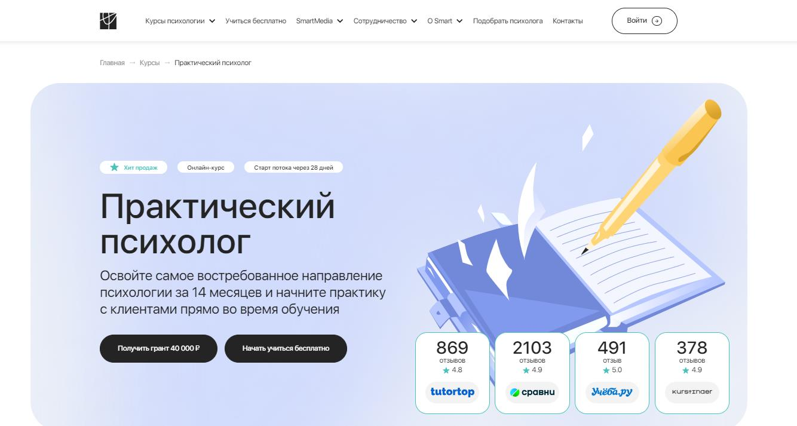⭐ Рейтинг: 4.7
- Сайт: smart-inc.ru
- Полная стоимость: 234 900 ₽ – 404 900 ₽. Возможность оформить налоговый вычет 13%.
- Рассрочка: от 9 788 ₽/мес. до 15 204 ₽/мес. на срок до 24 месяцев.
- Длительность: 14 месяцев.
- Документ: Диплом о профессиональной переподготовке, зарегистрированный в ФИС ФРДО.
- Трудоустройство: Центр карьеры помогает выпускникам найти клиентов, организует супервизии и предоставляет поддержку после обучения.
Особенности курса:
Программа обучения ориентирована на освоение современных методов консультирования, психодиагностики и практического психологического сопровождения клиентов. Обучение проходит в дистанционном формате с доступом к лекциям и материалам 24/7. Включены практические отработки навыков, супервизии с опытными специалистами и разбор реальных кейсов. Выпускники получают готовые инструменты для работы и возможность начать частную практику уже во время обучения.
Преподаватели курса:
- Марина Сокольская – доктор психологических наук, академик РАЕ, практикующий медиатор.
- Надежда Лукина – кандидат психологических наук, эксперт в клинической психологии.
- Светлана Варнавская – сертифицированный коуч, член Ассоциации когнитивно-поведенческой терапии.
- Максим Кожемякин – доцент, психолог-консультант, автор 20 научных публикаций.
- Василий Легостаев – медицинский психолог, гипнолог, когнитивно-поведенческий терапевт.
Кратко о программе курса:
- Основные направления психологического консультирования.
- Современные методы диагностики и работы с клиентами.
- Организационное консультирование и групповая терапия.
- Методы работы с тревожными состояниями и стрессом.
- Практикумы по профайлингу, коучингу, арт-терапии и НЛП.
Чему научитесь:
Освоите техники консультирования, научитесь анализировать запросы клиентов, работать с кризисными состояниями и эмоциональным выгоранием. Получите инструменты для ведения частной практики и построения карьеры в психологии.
Преимущества и особенности:
- Дистанционный формат с доступом к материалам 24/7.
- Практическое обучение: супервизии, разбор кейсов, работа с клиентами.
- Диплом о профессиональной переподготовке с регистрацией в ФРДО.
- Поддержка центра карьеры после окончания курса.
- Возможность совмещения учебы с работой благодаря гибкому графику.
Читайте отзывы учеников:
Выпускники отмечают высокое качество обучения, поддержку преподавателей и кураторов, удобный формат онлайн-занятий. Многие студенты уже в процессе обучения начинают работать с клиентами, а после завершения курса открывают собственную практику.
Психологическое консультирование для взрослых – Университет дополнительного профессионального образования (УДПО)
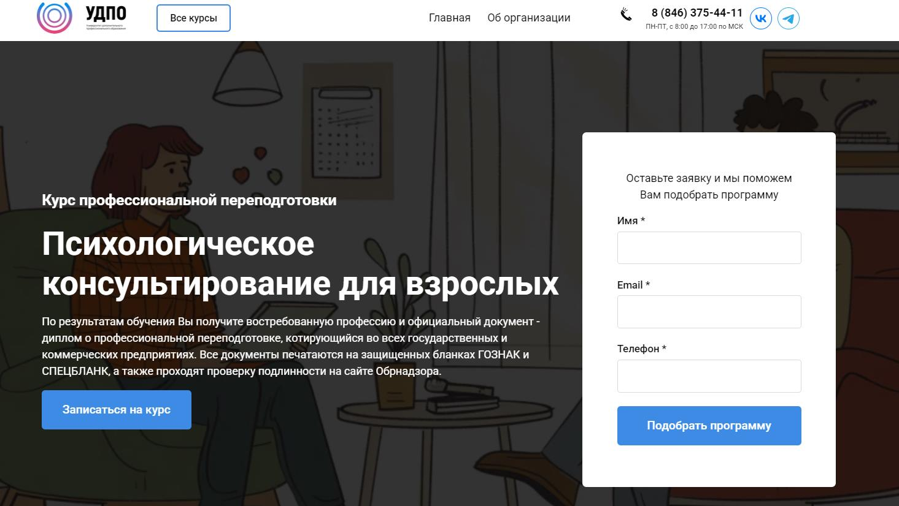
⭐ Рейтинг: 4.7
- Сайт: udpo.info
- Полная стоимость: от 15 699 ₽ до 23 799 ₽ в зависимости от программы. Возможность оформить налоговый вычет.
- Рассрочка: Возможна, подробности уточняйте у менеджера.
- Длительность: 2-12 месяцев в зависимости от выбранной программы.
- Документ: Диплом о профессиональной переподготовке установленного образца, зарегистрированный в ФИС ФРДО.
- Трудоустройство: Поддержка студентов в выборе направления, помощь в подготовке к работе с клиентами.
Особенности курса:
Программа дает возможность получить новую профессию или повысить квалификацию в сфере психологического консультирования. Обучение проходит дистанционно, студенты самостоятельно формируют график занятий. В программе – практическая работа с кейсами, теоретические блоки по основам психологии и консультирования, разбор реальных ситуаций. По окончании обучения выпускники получают диплом государственного образца, который котируется в коммерческих и государственных учреждениях.
Кратко о программе курса:
- Основные аспекты психологического консультирования.
- Методы диагностики и работы с клиентами.
- Навыки ведения индивидуальных консультаций.
- Основы профессиональной этики в сфере психологии.
- Разбор реальных кейсов и практическая работа.
Чему научитесь:
Научитесь проводить психологические консультации, разбирать запросы клиентов, применять техники диагностики, разрабатывать стратегии поддержки. Получите навыки работы в дистанционном и очном формате.
Преимущества и особенности:
- Дистанционный формат – обучение доступно из любой точки мира.
- Возможность совмещения с работой и личной жизнью.
- Диплом установленного образца, зарегистрированный в ФИС ФРДО.
- Гибкая система обучения – выбирайте комфортный темп освоения материала.
- Поддержка кураторов и помощь в организации учебного процесса.
- Официальная образовательная лицензия, возможность оформить налоговый вычет.
Читайте отзывы учеников:
Студенты отмечают доступный формат обучения, качественный учебный материал, поддержку кураторов и возможность совмещения учебы с работой. Выпускники курса успешно применяют полученные знания в частной практике и в корпоративной сфере.
Коуч. Психолог бизнес-консультант – Московская бизнес-академия
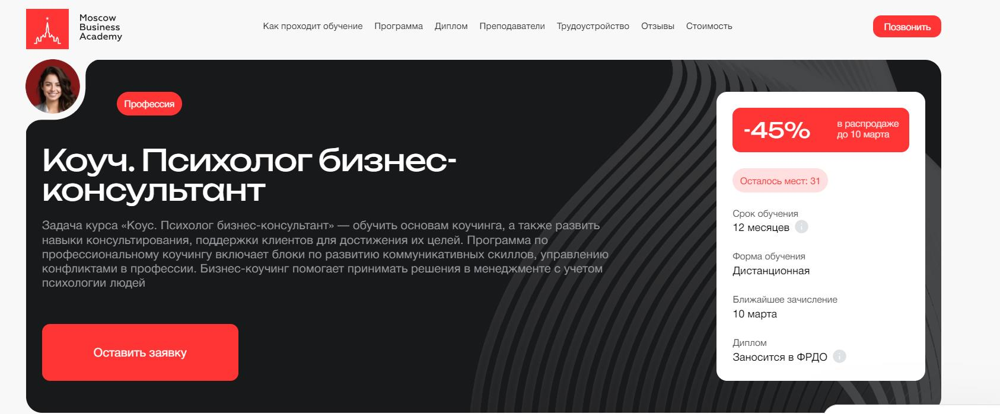⭐ Рейтинг: 4.6
- Сайт: moscow.mba
- Полная стоимость: 116 400 ₽, возможность оформить налоговый вычет.
- Рассрочка: от 4 850 ₽ в месяц на 24 месяца без переплат.
- Длительность: 12 месяцев.
- Документ: Диплом о профессиональной переподготовке, зарегистрированный в ФРДО.
- Трудоустройство: Поддержка в создании резюме, подготовка к собеседованиям, помощь в поиске клиентов.
Особенности курса:
Программа предназначена для специалистов, которые хотят освоить навыки бизнес-консультирования и коучинга. В курс включены современные методики работы с клиентами, управление конфликтами, мотивация персонала. Дистанционный формат обучения позволяет совмещать учебу с работой и использовать полученные знания в реальных ситуациях. Выпускники получают диплом установленного образца, который подтверждает квалификацию на рынке труда.
Преподаватели курса:
- Спикеры – эксперты с практическим опытом в крупных российских и международных компаниях.
- Преподаватели с опытом работы в коучинге, психологии бизнеса и управленческом консультировании.
Кратко о программе курса:
- Основы коучинга и консультирования.
- Психология бизнеса и личностный рост.
- Организационная психология и управление командами.
- Групповой коучинг и командообразование.
- Карьерный коучинг и стратегии роста.
- Эмоциональный интеллект и психология лидерства.
- Методы диагностики и фасилитации.
Чему научитесь:
Освоите инструменты коучинга и консультирования, научитесь работать с клиентами и бизнесом, применять психологические методики для решения профессиональных и личностных задач.
Преимущества и особенности:
- Гибкий дистанционный формат – доступ к материалам 24/7.
- Комбинация теории и практики – воркшопы, работа с кейсами.
- Преподаватели-практики с реальным опытом.
- Помощь в трудоустройстве и развитии карьеры.
- Возможность начать работать уже во время обучения.
- Диплом, зарегистрированный в ФРДО.
Читайте отзывы учеников:
Студенты отмечают высокое качество преподавания, актуальность программы и возможность сразу применять знания на практике. Выпускники успешно находят клиентов и работают в сфере бизнес-коучинга.
Психолог-практик – Среда обучения
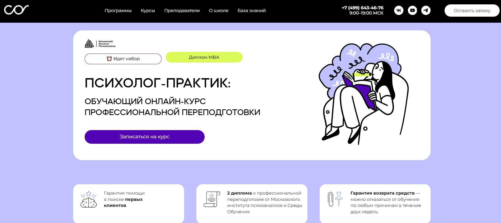⭐ Рейтинг: 4.5
- Сайт: psychology.sredaobuchenia.ru/psypractice
- Полная стоимость: 265 000 рублей (налоговый вычет 13%, скидки при полной оплате, возможность оплаты материнским капиталом)
- Рассрочка: от 6 052 ₽ в месяц на 24 месяца
- Длительность: 12 месяцев
- Документ: Диплом о профессиональной переподготовке + диплом MBA (по желанию)
- Трудоустройство: Карьерный центр помогает с продвижением, юридическими аспектами и поиском клиентов
Особенности курса:
Образовательная программа разработана совместно с Московским институтом психоанализа и включает современные методы психологического консультирования. Студенты получают доступ к практическим инструментам, учатся вести клиентов, работать с психодиагностикой и анализировать кейсы. Школа предлагает гибкий формат онлайн-обучения, поддержку кураторов и профессиональное сопровождение после окончания курса.
Преподаватели курса:
- Галина Лайшева – кандидат психологических наук, клинический психолог, преподаватель МГМСУ
- Гузелия Хузеева – доцент, специалист в области возрастной психологии
- Галина Федотова – семейный терапевт, преподаватель курса по ЭФТ
- Алина Козлова – преподаватель, консультант по продвижению психологических услуг
Кратко о программе курса:
- Основы диагностики и консультирования личности
- Психодиагностика и практическое применение методов
- Детская психология и семейное консультирование
- Современная психотерапия и работа с личностью
- Сексология: теория и практика
- Основы психиатрии и дифференциация психологических проблем
- Работа с кризисными состояниями и психотерапевтическое сопровождение
- Стажировка и итоговая аттестация
Чему научитесь:
Курс позволит освоить ключевые навыки консультирования, работать с реальными клиентами, разбираться в психодиагностике и применять эффективные методы работы с личностью и семейными запросами.
Преимущества и особенности:
- Диплом престижного учебного заведения
- Практическая направленность обучения
- Гибкий онлайн-формат
- Помощь в запуске карьеры
- Доступ к современным психодиагностическим инструментам
- Стажировка и поддержка в поиске первых клиентов
- Возможность получения диплома MBA
- Гарантия возврата средств в течение первых 2 недель
Читайте отзывы учеников:
Студенты отмечают, что курс дает много практики, помогает понять специфику работы с клиентами и начать карьеру в психологии. Высоко оценивают профессионализм преподавателей, доступность материалов и возможность совмещения с работой. Среди преимуществ также выделяют поддержку кураторов и помощь в поиске клиентов.
Практическая психология с дополнительной специализацией в области психологического консультирования – АНО «НИИДПО»
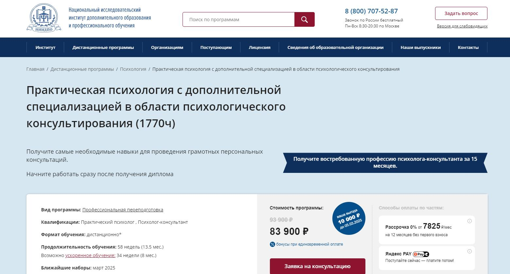⭐ Рейтинг: 4.5
- Сайт: niidpo.ru/seminar/psiholog-konsultant-1770-chasov
- Полная стоимость: 93 900 ₽ (со скидкой до 21 февраля – 83 900 ₽). Возможность налогового вычета и бонусы при единовременной оплате.
- Рассрочка: от 7 825 ₽ в месяц на 12 месяцев, без первого взноса.
- Длительность: 58 недель (13,5 месяцев). Возможность ускоренного обучения – 34 недели (8 месяцев).
- Документ: Диплом о профессиональной переподготовке, сертификат компетенций.
- Трудоустройство: Поддержка карьерного центра, помощь в создании резюме, обучение продвижению услуг и юридическим аспектам работы.
Особенности курса:
Программа обучения дает полный спектр знаний и навыков для работы в сфере психологического консультирования. Разработана в соответствии с профессиональными стандартами и включает теоретическую подготовку, практические кейсы, онлайн-вебинары и междисциплинарный экзамен. Студенты получают доступ к материалам программы навсегда, а также к библиотеке вебинаров на 90 дней после окончания курса. Карьерный центр помогает выпускникам запустить частную практику и освоить инструменты маркетинга и продвижения.
Преподаватели курса:
- Кандидаты психологических наук – эксперты в области общей и социальной психологии.
- Психотерапевты – практикующие специалисты в области арт-терапии, гештальт-терапии.
- Клинические психологи – профессионалы с опытом работы в медицине, семейном консультировании.
Кратко о программе курса:
- Основы психологии – педагогическая, социальная, возрастная психология.
- Методы психодиагностики – работа с личностью, групповая динамика.
- Психологическое консультирование – стратегии работы с клиентами.
- Семейная психология – технологии взаимодействия с семьями.
- Коучинговые методы – сопровождение клиентов в решении жизненных задач.
- Практика – выполнение заданий с проверкой преподавателей.
Чему научитесь:
Студенты получают необходимые знания для проведения индивидуальных и групповых консультаций, осваивают технологии диагностики и психологической помощи, а также развивают навыки продвижения своих услуг.
Преимущества и особенности:
- Государственный диплом с признанием в России.
- Полный доступ к учебным материалам даже после окончания обучения.
- Практико-ориентированное обучение с кейсами и заданиями.
- Круглосуточная поддержка студентов на всех этапах.
- Возможность участия в открытых супервизиях.
- Помощь в запуске частной практики и продвижении услуг.
Читайте отзывы учеников:
Студенты отмечают доступный и удобный формат дистанционного обучения, высокий уровень преподавателей, возможность совмещения учебы с работой. Многие выпускники успешно запустили собственную практику или нашли работу в образовательных и медицинских учреждениях.
Психологическое консультирование – Московская школа практической психологии (МШПП)
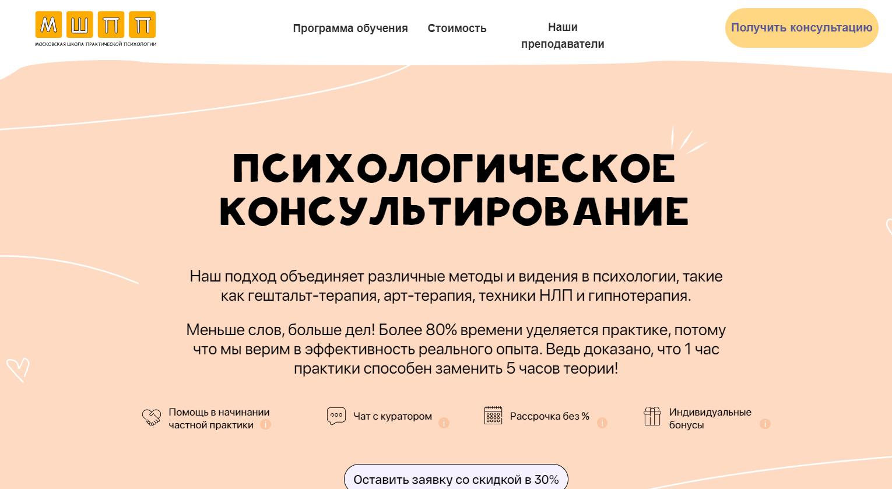⭐ Рейтинг: 4.5
- Сайт: mspp.online/psihologicheskoe-konsultirovanie-polimodalnyj-podhod
- Полная стоимость: 108 400 ₽ (со скидкой 30% – 71 000 ₽). Возможность оплаты в рассрочку и налогового вычета.
- Рассрочка: от 4 540 ₽ в месяц на 24 месяца, без переплат.
- Длительность: 12 месяцев (можно совмещать с работой).
- Документ: Диплом о профессиональной переподготовке, занесенный в реестр Министерства образования РФ.
- Трудоустройство: Поддержка в начале карьеры, помощь в продвижении частной практики, персональные консультации по маркетингу услуг.
Особенности курса:
Обучение основано на практическом подходе: 85% программы занимает практика, позволяя студентам отрабатывать ключевые навыки консультирования. Включены современные техники – когнитивно-поведенческая терапия (КПТ), гештальт-терапия, арт-терапия, нейролингвистическое программирование (НЛП), гипнотерапия. Студенты изучают профессиональную этику, способы работы с клиентскими запросами и психологическую диагностику. Учебный процесс сопровождается индивидуальными чатами с менторами, супервизиями и групповой работой.
Преподаватели курса:
- Косина Алла – практикующий психолог, специалист по КПТ, НЛП и гештальт-терапии.
- Цыганкова Анастасия – клинический психолог, бизнес-тренер, эксперт в области консультирования.
- Левина Полина – ментор и методист, проверяющий практические задания студентов.
- Староверова Наталья – гипнолог, психолог-консультант с 16-летним опытом.
Кратко о программе курса:
- Основы психологического консультирования – этика, специфика профессии, работа с клиентами.
- Клиническая психология – психодиагностика, патопсихология, психосоматика.
- Методы диагностики – тестирование, психологический анализ.
- Гештальт-терапия – теория, контактные механизмы, работа с сопротивлением.
- Когнитивно-поведенческая терапия – схема-терапия, диагностика, изменение установок.
- Арт-терапия – мандалы, работа с образами, сказкотерапия.
- Современная гипнотерапия – техники внушений, гипноанализ.
- Психодрама – работа с ролями, взаимодействие в группе.
- Работа с зависимостями – неклинические формы, методы поддержки клиентов.
- Основы сексологии – психосексуальное развитие, работа с парами.
Чему научитесь:
Студенты научатся проводить психологические консультации, работать с тревогами, фобиями, низкой самооценкой, эмоциональным выгоранием. Освоят ведущие методы диагностики и психокоррекции, а также получат навыки построения личного бренда и продвижения в частной практике.
Преимущества и особенности:
- Большая часть программы – это практика и разбор реальных кейсов.
- Современные подходы – КПТ, гештальт, гипноз, арт-терапия, коучинг.
- Персональное сопровождение – чат с ментором, интервизии, проверка заданий.
- Гибкий формат – можно совмещать обучение с работой.
- Доступ к учебным материалам после окончания курса.
- Поддержка в запуске частной практики и развитии карьеры.
- Выдача диплома установленного образца с внесением в реестр Минобразования РФ.
Читайте отзывы учеников:
Студенты отмечают высокий уровень преподавателей, большое количество практических занятий и удобный формат онлайн-обучения. Отзывы подчеркивают, что курс подходит как для начинающих, так и для уже практикующих специалистов, желающих расширить свои навыки. Отдельно хвалят поддержку кураторов и четко структурированную программу.
Психолог-консультант с дополнительной специализацией в области когнитивно-поведенческой терапии – Институт Профессионального Образования (ИПО)
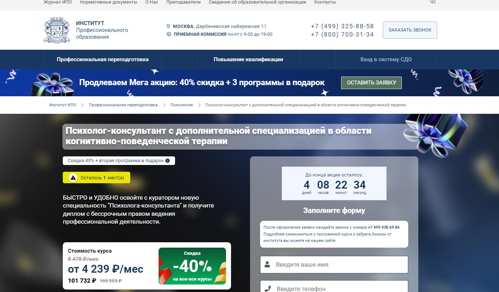⭐ Рейтинг: 4.4
- Сайт: ipo.msk.ru
- Полная стоимость: 203 464 ₽, со скидкой 101 732 ₽. Возможность оформить налоговый вычет.
- Рассрочка: от 4 239 ₽/мес на 24 месяца.
- Длительность: 1110 часов (56 недель, 13 месяцев).
- Документ: Диплом о профессиональной переподготовке с государственной лицензией.
- Трудоустройство: Центр карьеры помогает выпускникам с построением частной практики.
Особенности курса:
Курс сочетает теоретическую и практическую подготовку, охватывая ключевые аспекты когнитивно-поведенческой терапии. Студенты изучат методы диагностики, работы с тревожными расстройствами, эмоциональными проблемами и психологическими барьерами. Программа адаптирована под гибкий график обучения, доступ к материалам сохраняется бессрочно.
Преподаватели курса:
- Падве Сергей Ефимович — психолог-консультант.
- Хашимов Владислав Владимирович — психодраматист, практикующий психолог.
- Першина Анна Владимировна — бизнес-тренер, коуч.
- Русецкая Анна — лайф-коуч, психолог-сексолог.
- Сотникова Марина Игоревна — преподаватель психологии.
Кратко о программе курса:
- Основы психологического консультирования.
- Когнитивно-поведенческая терапия: теоретические и практические методы.
- Психодиагностика и тестирование в консультировании.
- Работа с когнитивными искажениями, автоматическими мыслями и убеждениями.
- Основные техники работы с тревожными расстройствами.
- Психологическая помощь при стрессе, депрессии и эмоциональном выгорании.
Чему научитесь:
Вы освоите современные методы когнитивно-поведенческой терапии, научитесь работать с различными запросами клиентов, диагностировать психологические состояния и помогать в преодолении внутренних барьеров.
Преимущества и особенности:
- Гибкое дистанционное обучение, доступ к материалам на платформе.
- Практические задания и обратная связь от преподавателей.
- Дополнительные бонусные курсы для расширения компетенций.
- Бессрочный доступ к материалам после завершения курса.
- Помощь в трудоустройстве и развитии частной практики.
Читайте отзывы учеников:
Студенты отмечают удобный формат дистанционного обучения, профессионализм преподавателей и качественную подачу материала. Также выделяют практическую направленность курса, что помогает сразу применять полученные знания в работе.
Психолог-консультант. Экспертный тариф, максимум практики – Институт прикладной психологии в социальной сфере
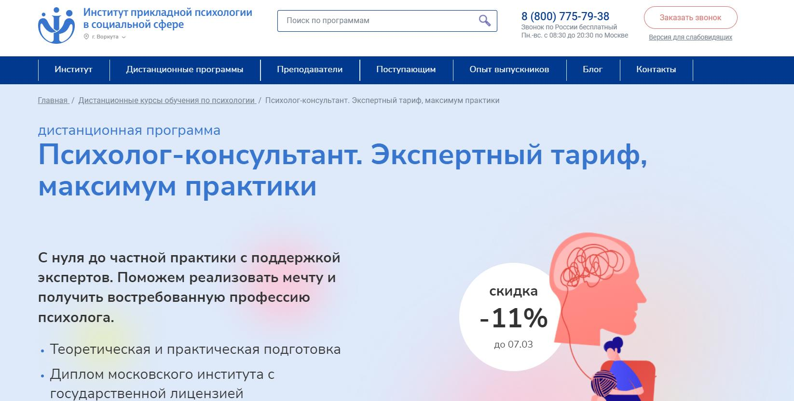⭐ Рейтинг: 4.4
- Сайт: ippss.ru
- Полная стоимость: 207 400₽, со скидкой 185 200₽. Возможность оформить налоговый вычет.
- Рассрочка: от 17 283 ₽/мес на 12 месяцев.
- Длительность: 1680 академических часов (примерно 13 месяцев).
- Документ: Диплом о профессиональной переподготовке московского института с государственной лицензией.
- Трудоустройство: Поддержка в построении частной практики, помощь в трудоустройстве через Центр развития карьеры.
Особенности курса:
Программа включает максимальное количество практических занятий, супервизий и интерактивных форматов обучения. Студенты не только получают теоретические знания, но и сразу применяют их на практике, участвуя в мастер-классах, интервизиях, супервизиях и демонстрационных сессиях. Курс охватывает все аспекты психологического консультирования, включая психодиагностику, работу с клиентами и продвижение частной практики.
Преподаватели курса:
- Крутых Евгений Геннадьевич — врач-психиатр, кандидат медицинских наук.
- Морозова Ольга Александровна — психолог, коуч, бизнес-тренер.
- Плющева Ольга Александровна — клинический психолог, тренер, супервизор.
- Феоктистова Наталья Владимировна — психолог-психоаналитик.
- Дорофеева Елена Владимировна — педагог-психолог высшей категории.
Кратко о программе курса:
- Введение в профессию, профессиональная этика.
- Основы психологического консультирования, методики работы.
- Психодиагностика, тестирование, анализ когнитивных искажений.
- Когнитивно-поведенческая терапия: теория и практика.
- Работа с тревожными расстройствами, депрессией, самооценкой.
- Развитие частной практики: личный бренд, поиск клиентов.
Чему научитесь:
Освоите востребованные методики психологического консультирования, научитесь работать с клиентами, проводить диагностику и консультировать по различным запросам, а также получите навыки продвижения личной практики.
Преимущества и особенности:
- Диплом московского института с государственной лицензией.
- Большой объем практики с супервизией и обратной связью.
- Доступ к обучающим материалам остается навсегда.
- Помощь в организации частной практики и развитии карьеры.
- Интерактивные форматы: воркшопы, мастер-классы, интервизии.
- Индивидуальные консультации с опытными психологами.
Читайте отзывы учеников:
Выпускники курса отмечают высокий уровень преподавания, поддержку наставников и полезность практических занятий. Многие студенты начинают консультировать уже в процессе обучения, благодаря чему уверенно выходят на рынок психологических услуг.